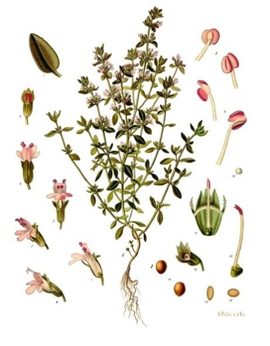
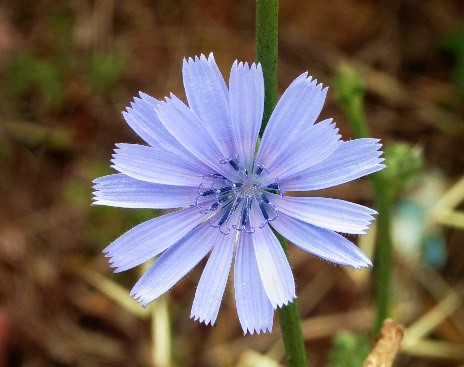
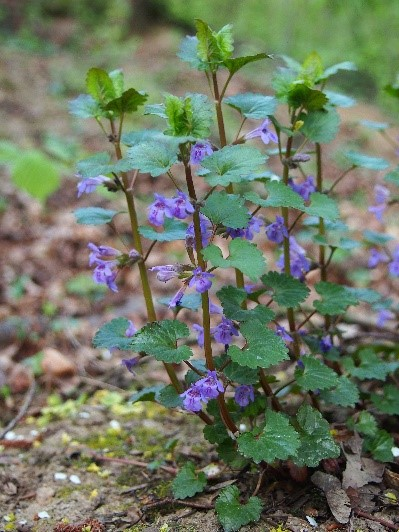

Bunte Kräuter aus dem Tierkräutergarten, Foto von Susanna Hansen
- Größe: ca. 150 m²
- Magere und humose Bodenmischung
- 80 Arten Kräutern und essbare Pflanzen
- Kräuter als Futter für Kleintiere wie Kaninchen und Schildkröte
- Im Garten wachsen Pimpinelle, Thymian, Wegwarte, Wiesensalbei, Wilde Malve, Natternkopf, Gundermann, Petersilie, Borretsch, Eibisch, Rainkohl usw.
Pimpinelle
- o auch der kleine Wiesenknopf genannt, (Sanguisorba minor)
- o Rosaceae(Rosengewächse)
- o Blütezeit: Mai-Juli
- o Essbar: meist als Kräuter in Soßen, Petersilie-Ersatz
Thymian
Skizze von Thymian, lizenziert unter CC BY-SA 3.0.
{kind=link}
- o Der echte Thymian Thymus vulgaris
- o Lamiaceae (Lippenblütler)
- o Mehrjähriger Halbstrauch ursprünglich aus dem westlichen Mittelmeerraum
- o Am besten auf trockenen, kalkhaltigen, flachgründigen Boden
- o Als Heilpflanzen: gegen Bronchitis, Keuchhusten, ätherisches Thymianöl: antibakteriell, antiviral
- o Gute Bienenweide
- o Gewürze für Suppen und Gerichte
- o Blütezeit: Juni-Oktober
Gemeine Wegwarte
Gemeine Wegwarte, lizenziert unter CC BY-SA 3.0.
o Cichorium intybus o Astraceae (Korbblütler) =Zungenblätter und Hüllblätter o Pionierpflanze und gleichzeitig durch Insekten bestäubt: Wegränder, Straßen o Zweijährig o Nutzung - Heilpflanze: schweißtreibend, Magen-Darm, Leber, Hautkrankheiten - Essbar: Laubbläter, Stängel, Blüten in Salten, Gerichte, Suppen und Soßen o Blütezeit: Juli-Oktober o Chicorée, Radicchio und Zuckerhut stammen von Wegwarte
Gundermann
Gundermann am Waldboden, lizenziert unter CC BY-SA 3.0.
o Glechoma hederaceae o Lamiaceae(Lippenblütler) o Wintergrüne ausdauernde Kraut o Ätherische Öle und Pflanzen mit Bitterstoffen: Konservierungsstofff oder Gewürz o Blütezeit: April-Juni